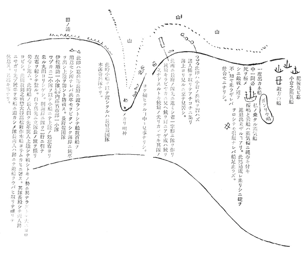
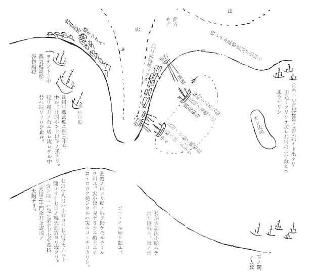
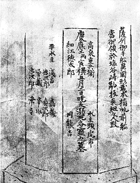
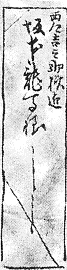
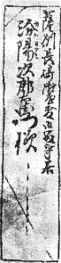

| 手紙 042 慶応二年十二月四日 坂本権平、一同あて | |
| 坂本 竜馬 | |
| (2012) | |
手紙
慶応二年十二月四日 坂本権平、一同あて
坂本龍馬
此手紙もし親類之方などに御為レ 見被レ 成 候ハヾ必ず〳〵誰れかに御書取らセ被レ 成候て御見セ。順蔵さんえも其書き写さ礼 し書を御見セ。私手紙ハ必ず〳〵乙姉さんの元に御納め可レ 被レ 遣候。
龍馬
御一同様
一、今春上京之節伏見にて難にあい候頃より、鹿児嶋に参り八月中旬より又長崎に出申候。先日江ノ口之人溝渕広之丞に行あひ候而
、何か咄しいたし申候。其後蒸気船の将武藤早馬に行逢候得ども、是ハ重役の事又ハ御国に帰れなど云ハれん事を恐れ、しらぬ顔して通行
しに、広之丞再三参り、私之存念を尋候ものから認め送り候処、内々武藤にも見セシ様子。此武藤は兼而江戸に遊びし頃、実に心路
安き人なれバ、誠によろこびくれ候よし。旧友のよしミハ又忝
きものにて候。其私の存念ハ別紙に指上
候。御覧可レ
被レ
遣候。
一、別紙之内女の手紙有レ
之。是ハ伏見寺田屋おとセと申者にて候。是ハ長州家及び国家に志ある人々ハ助けられ候事ども有レ
之者なり。元より学文も十人並の男子程の事ハいたし居り候ものなり。それハ薩州に送り来り候手紙一つ指上候。伏見之危難よく分り申候。
一、別紙に木圭と申人の（桂小五郎と申人なり。）手紙有レ
之候。是ハ長州の政事を預り候第一之人物にて、此人之手跡、四方之人ほしがり候。幸手元に数々有レ
之から指出候。
一、社
太郎も此頃ハ丈夫に相成候べしと存候。夫
男児を育るハ誠ニ心得あるべし、とても御国の育方にてハ参り兼候べしと、実ニ残念ニ存候。
一、上ニ申伏見之難ハ去ル正月廿三日夜八ツ時半頃なりしが、一人の連れ三吉慎蔵と咄して風呂より揚り、最早寝んと致し候処に、ふしぎなる哉（此時二階居申候。）人の足音のしのび〳〵に二階下をあるくと思ひしに、六尺棒の音から〳〵と聞ゆ、おり柄兼而御聞に入し婦人、（名ハ龍今妻也。）勝手より馳
セ来り云様、御用心被レ
成べし不レ
謀敵のおそひ来りしなり。鎗持たる人数ハ梯の段を登りしなりと、夫より私もたちあがり、はかまを着と思ひしに次の間に置有レ
之ニ付、其儘大小を指し六連炮を取りて、後なる腰掛による。連れなる三吉慎蔵ハはかまを着、大小取りはき鎗を持ちて是も腰掛にかゝる。間もなく、壱人の男障子細目に明ケ内をうかがふ。見れバ大小指込なれバ、何者なるやと問しに、つか〳〵と入り来れバ、すぐに此方も身がまへ致セバ、又引取りたり。早次ギの間もミシ〳〵物音すれバ龍女に下知して、次の間又後の間のからかみ取りはづさし見れバ、早拾人計り鎗持て立並びたり、又
盗賊燈
灯二ツ持、又六尺棒持たる者其左右に立たり。双方暫くにらみあふ処に、私より如何なれバ薩州の士に不礼ハ致すぞと申たれバ、敵口々に上意なり、すはれ〳〵とのゝしりて進来る。此方も壱人ハ鎗を中段にかまへ立たり。敵より横を討ると思ひ、私ハ其左へ立変り立たり。其時銃ハ打金を上ゲ敵拾人斗りも鎗持たる一番右の初めとして一ツ打たりと思ふに、此者退きたり。又其次ぎなる者を打たりしに其敵も退きたり。此間敵よりハ鎗をなげ突にし、又ハ火鉢を打込色々たゝかふ。味方も又鎗持て禦ぐ。家内之戦実に屋
かましくたまり不レ
申。其時又壱人を打しが中りし哉
分り不レ
申処、敵壱人障子の蔭より進ミ来り、脇指を以て私の右の大指の本をそぎ左の大指の節を切割、左の人指の本の骨節を切たり。元より浅手なれバ其者に銃をさし向しに、手早く又障子の蔭にかけ入りたり。扨前の敵猶迫り来るが故に、又一発致セしに中りし哉不レ
分、右銃ハ元より六丸込ミな礼
ども、其時ハ五丸のミ込てあれば、実ニ跡一発限りとなり、是大事と前を見るに今の一戦にて敵少ししらみたり。一人の敵黒き頭巾を着、たちつケをはき鎗を平省
眼のよふにかまへ近〻よりて壁に添て立し者あり。夫を見るより又打金を上ゲ、慎蔵が鎗持て立たる左の肩を銃の台にいたし、敵の胸をよく見込ミて打たりしに、敵丸に中りしと見へて、唯ねむりてたをるゝ様に前にはらばふ如くたをれたり。此時も敵の方にハ実ニドン〳〵障子を打破るやらふすまを踏破るやら物音すさまじく、されども一向に手元にハ来らず、此間に銃の玉込ミせんと銃の
此様なるもの取りはづし、二丸迄ハ込たれども先刻左右の指に手を負ひ、手先き思ふ様ならず、阿屋
まりて右玉室を取り落したり。下を尋ねると雖ども元よりふとん引さがしたる上へ、火鉢の灰抔
敵よりなにかなげ込し物と交り不レ
分。此時敵ハ唯どん〳〵計りにて此方に向ふ者なし。夫より銃を捨、慎蔵に銃ハ捨たりと言バ慎蔵曰、然時ハ猶敵中に突入り戦ふべしと云ふ。私曰、此間に引とり申さんと云へバ、慎蔵も持たる鎗をなげすて後のはしごの段を下りて見れバ、敵ハ唯家の店の方計りを守り進む者なし。夫より家の後なる屋そひをくゞり、後の家の雨戸を打破り内に入て見れバ、実に家内之者ハねぼけてにげたと見へて夜具など引てあり。気の毒ながら、其家の立具
も何も引はなし後の町に出んと心がけしに、其家随分丈夫なる家にて中〻破れ兼たり。両人して刀を以てさん〴〵に切破り、足にて蹈
破りなどして町に出て見礼
バ人壱人もなし。是幸と五町斗りも走りしに、私病後の事なれバ、いききれあゆまれ不レ
申、着物ハ足にもつれぐず〳〵いたセバ敵追着の心配あり、（此時思ふにハ男子ハすねより下にたるゝ着物ハ致すべからず候。此時ハ風呂より上りし儘なれバ、湯着を下ニ着て、其上にわた入を着、はかまハ着る間なし。）つひに横町にそれ込ミて、御国の新堀の様なる処に行て町の水門よりはひ込ミ、其家の裏より材木の上に上り寝たるに、折悪くいぬがほえて実にこまり入たり。そこにて両人其材木よりおりしが、つひに三吉ハ先ヅ屋敷に行べしとて立出しが屋敷の人と共にむかひに参り、私も帰りたり。扨彼指の疵ハ浅手なれども動脉とやらにて翼日
も血が走り止ず、三日計も小用に参ると、目舞
致候。此夜彼龍女も同時に戦場を引取り、直様屋敷に此よしを告げしめ、後ハ共〻京の屋敷江
引取り今ハ長崎江共〻出づ。（此頃余程短銃上達す。）
此伏見江取り手の来りしを詮儀
するに大坂町奉行ハ松平大隅守と云て、同志の様に度〻咄しなど致し、面会時〻したるに此度ハ大坂より申来りしとの事、合点ゆかず猶々聞合すにはたして町奉行ハ気の毒がり居候よし。此大坂より申来りしハ幕府大目付某が伏見奉行へ申来るにハ、坂本龍馬なるものハ決而
ぬすみかたりハ致さぬ者なれども、此者がありてハ徳川家の御為にならぬと申て是非殺す様との事のよし。此故ハ幕府の敵たる長州薩州の間に往来して居との事なり。其事を聞多
る薩州屋敷の小松帯刀、西郷吉之助なども皆、大笑にてかへりて私が幕府のあわて者に出逢てはからぬ幸と申あひ候。
此時うれしきハ、西郷吉之助（薩州政府第一之人、当時国中に而ハ鬼神と云ハれる人なり。）ハ伏見の屋敷よりの早使より大気遣にて、自ら短銃を玉込し立出んとせしを、一同押留てとふ〳〵京留守居吉井幸助、馬上にて士六拾人計り引連れ、むかひに参りたり。此時伏見奉行よりも打取れなどのゝしりしよしなれども、大乱にも及ぶべしとて其儘に相成候よし。実に盛なる事にて有レ
之候。私ハ是より少々かたハにハなりたれども、一生の晴にて有レ
之候。疵ハ六十日計り致し能く直りたり。左の大指ハ元の如し、人指ハ疵口よくつげて只思ふ様に叶ぬと申斗りにて、外見苦しき事なし。右の大指のわた持をそがれしハ一番よく直りたり。右の高指の先きの節、少〻疵つけども直様
治りたり。
一、七月頃、蒸気船（桜嶋といふふね）を以て薩州より長州江使者ニ行候時被レ
頼候而、無レ
拠
長州の軍鑑
を引て戦争セしに是ハ何之心配もなく、誠ニ面白き事にてありし。一、惣而
咄しと実ハ相違すれ共、軍ハ別而
然り。是紙筆ニ指上ゲ候而も、実と不レ
被レ
成かも不レ
知、一度やつて見たる人なれば咄しが出来る。
七月以後戦ひ止時なかりしが、とふ〳〵十月四日と成り長州より攻取し土地ハ小倉江渡し、以後長州ニ敵すべからざるを盟ひ、夫より地面を改めしに、六万石斗ありしよし。
右戦争中一度大戦争がありしに長州方五拾人計打死いたし候時（軍にて味方五十人も死と申時、敵方合セておびたゞしき死人也。）先き手しバ〳〵敗セしに、高杉普作
ハ本陣より錦之手のぼりにて下知し、薩州の使者村田新八と色〻咄しなどいたしへた〳〵笑ながら気を付て居る。敵ハ肥後の兵などにて強かりけれバ、普作下知して酒樽を数〻かき出して、戦場ニて是を開かせなどしてしきりに戦ハセ、とふ〳〵敵を打破り肥後の陣幕旗印抔不レ
残分取りいたしたり。私共兼而ハ戦場と申セバ人夥しく死する物と思ひしに、人の拾人と死する程之戦なれバ、余程手強き軍が出来る事に候。


一、水通三丁目に居し上田宗虎防主
、池蔵太
について大和に行しが、此頃長州ニて南奇隊参謀に成て芸州之戦に幕兵之野台場を攻たりしに、中〻幕兵強くして破れ難し。上田、士卒に下知して進ミ兎角して砲台之外よりかき上り内に飛入しに、内ハまた外なる敵に向ひ数玉など打て盛なりしに、上田も士卒に下知するうち、幕之大炮号令官と行逢、刀を抜間もなくて組合しに敵方ハ破れぎハなり、つゞく兵ハなく宗虎方にハ部下之銃卒壱人馳セ来り、ケベールを以て打殺セしに組討にてたをれたる処なれバ、敵をバ打殺しつれども、宗虎がうでを打抜たり。宗虎ハ敵をバ追払ひ其台場をも乗り取り、自身ハ手をいためし計り之事にて、此頃名高き高名、中〻花〻敷事と皆〻浦山敷がり申候。此事
ついて只、宗虎が親類江御咄し被レ
成候得バ、喜び可レ
申存候。
一、お屋べどのの養子ハ如何様なる暮し方にや、定而
心配斗にて気之毒なる事にてあるべく、おやべにハ早、どん腹と屋
らおほきになりし事、とくより承りしが、男子出生なれバよろしからんと存じ候。
一、養子の事ハ如何様之武士に候哉、逢申度候。私も此頃は色〻見聞いたす内、武士だけの事ハ、今ハ日本中ニ而
格別はぢ申事ハさらに無レ
之候間、御歓可レ
被レ
遣候。どふぞ養子が出て来れバ、少しハ武士道において導き可レ
遣候と存候。
一、養子に御申聞被レ
下度事ハ御国にて流行申候長剣ハ兼而も申候通り壱人〳〵之諠
又ハ、昔咄しの宮本武蔵の試合など申時ハ、至極宜
候得ども、当時の戦場にてハ悪く候。人数を指引致す人などハ銃をも持たぬもの故に、随分きらひやがおる。長剣も可レ
宜候得ども手に銃を取る丈の人ハ実ハ刀もなくて可レ
宜候得ども、其通りも参るまじけれバ弐尺壱弐寸の刀に、四五寸計の短刀が宜候。戦場ニ而引取り而は又かけ引取り而ハまたかけ仕時、刀を心掛候人ハ銃を捨るものにて、つひにハ惣人数の銃が少くなり申ものにて候間、譬
侍馬廻りと申ても銃にて働く者ハ、刀ハなくても可レ
然存候。戦場と申ても治世に思ふよふにいそがしき物にても無レ
之候。譬へ敵鼻先きへ来るとも、少しの心得があれバ随分銃の込ミ替ハ出来るものにて候。
一、池蔵太
曰、いつの戦にても敵合三五十間に成て銃戦之時ハ銃の音のする時弱き方、必ず地へ伏し申候。此時蔵太ハ辛抱して立ながら号令致し候とて、夫が自慢にて候。
一、銃にて久しく戦時ハ必そこに拾人、かしこに弐拾人、或ハ三四拾人計り名〻
人の蔭により集り候。是ハ戦になれぬ者にてか様ニなり候方ハ、いつも死人多くなりまけ申ものにて候。強きものハか様にハならぬものにて候。先年英人長州にて戦しに船より上陸するとばら〳〵と開き、四間に壱人宛計りに立並び候。
一、当時天下之人物と云ハ、
徳川家ニハ大久保一翁、勝安房守。
越前にてハ三岡八郎、長谷部勘右衛門。
肥後ニ 横井平四郎。
薩にて 小松帯刀。（是ハ家老にて海軍惣大将なり。）
西郷吉之助。（是ハ国内軍事に懸る事国家之進退此人ニ預る。）
長州にて 桂小五郎。（国家之進退を預る当時木戸寛次郎。）
高松
普
作。（此人ハ軍事ニ預る、此人下の関に出小倉攻之惣大将当時谷潜蔵。）
一、私唯今志延而
、西洋船を取り入たり、又ハ打破れたり致し候ハ、元より諸国より同志を集め水夫を集め候へども、仕合セにハ薩州にてハ小松帯刀、西郷吉之助などが如何程やるぞ、やりて見候へなど申くれ候つれバ、甚だ当時ハ面白き事にて候。どふぞ〳〵昔の鼻たれと御笑被レ
遣間じく候。
一、こゝにあはれなるハ池蔵
太ニ而
候。九度之戦場ニ出ていつも人数を引て戦ひしに、一度も弾丸に中らず仕合せよかりしが、一度私共之求しユニヲンと申西洋形の船に乗り、難に逢、五嶋の志ハざき
にて乱板し五月二日之暁天に死たり。人間一生実ニ猶夢の如しと疑ふ。杉山えも此事御咄し被レ
成度、元より其死たる岡にハ印あり。
右之内生残る者四人と云。

細江徳太郎と云ハ池蔵太事ニ而候。高泉と云、黒木半兵衛とて千葉十
太郎の門人にて、真剣勝負之時平日之稽古と違ハず、人是をおどろく。
一、何卒去年御頼申上候父上を初め、皆様之御詠歌など御越し被レ
遣度候。
左之通御記し被レ 成。

又其上を左之通

右十二月四日長崎本はかた町小曽根英四郎方にて記す。此宿ハ此八月より定宿として滞留致し居候。
底本：「龍馬の手紙」宮地佐一郎、講談社学術文庫、講談社
２００３（平成15
）年12
月10
日第1
刷発行
２００８（平成20
）年9
月19
日第7
刷発行
※底本本文の末尾に、（高知 弘松家文書）とあります。
※丸括弧付きの語句は、底本編集時に付け加えられたものです。
入力：Yanajin33
校正：Hanren
２０１０年8
月26
日作成
２０１１年6
月17
日修正
青空文庫作成ファイル：
このファイルは、インターネットの図書館、青空文庫（http://www.aozora.gr.jp/）で作られました。入力、校正、制作にあたったのは、ボランティアの皆さんです。